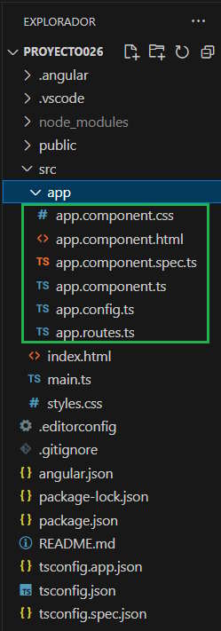

Después de haber trabajado con muchos ejercicios podemos tener una idea de como se organizan las carpetas y archivos en un proyecto Angular.
La carpeta 'app' depende directamente de la carpeta 'src' y contiene en su interior 6 archivos:
app.component.ts Define la lógica para el componente raíz de la aplicación, llamado AppComponent:
import { Component } from '@angular/core';
import { RouterOutlet } from '@angular/router';
@Component({
selector: 'app-root',
imports: [RouterOutlet],
templateUrl: './app.component.html',
styleUrl: './app.component.css'
})
export class AppComponent {
title = 'proyecto026';
}
Hay que tener en cuenta que la clase se llama 'AppComponent' y tiene asociado el selector 'app-root' que es el que hacemos referencia en el archivo index.html.
Angular CLI crea en forma automática esta clase y define en su interior un atributo llamado 'title' y se le asigna un string que coincide con el nombre del proyecto que creamos con el comando 'ng new proyecto037'
app.component.html Define la plantilla HTML asociada con la clase AppComponent. El contenido original tiene más de 300 líneas y seguramente lo eliminaremos para crear la interfaz visual de la componente raiz de nuestra aplicación.
Por ejemplo podemos modificar y disponer que muestre el nombre del proyecto dentro de una etiqueta HTML h1:
<h1>{{title}}</h1>
<router-outlet />
app.component.css Define la hoja de estilo que se aplica solo a dicha componente. Angular CLI crea este archivo vacío.
app.component.spec.ts Se definen las pruebas unitarias para la componente 'AppComponent'
import { TestBed } from '@angular/core/testing';
import { AppComponent } from './app.component';
describe('AppComponent', () => {
beforeEach(async () => {
await TestBed.configureTestingModule({
imports: [AppComponent],
}).compileComponents();
});
it('should create the app', () => {
const fixture = TestBed.createComponent(AppComponent);
const app = fixture.componentInstance;
expect(app).toBeTruthy();
});
it(`should have the 'proyecto026' title`, () => {
const fixture = TestBed.createComponent(AppComponent);
const app = fixture.componentInstance;
expect(app.title).toEqual('proyecto026');
});
it('should render title', () => {
const fixture = TestBed.createComponent(AppComponent);
fixture.detectChanges();
const compiled = fixture.nativeElement as HTMLElement;
expect(compiled.querySelector('h1')?.textContent).toContain('Hello, proyecto026');
});
});
app.routes.ts El archivo contiene un arreglo de tipo Routes con todas las rutas de nuestra aplicación, por defecto el arreglo se encuentra vacío.
import { Routes } from '@angular/router';
export const routes: Routes = [];
app.config.ts Lista de proveedores que deberían estar disponibles para el componente raíz y todos sus hijos.
import { ApplicationConfig, provideZoneChangeDetection } from '@angular/core';
import { provideRouter } from '@angular/router';
import { routes } from './app.routes';
export const appConfig: ApplicationConfig = {
providers: [provideZoneChangeDetection({ eventCoalescing: true }), provideRouter(routes)]
};